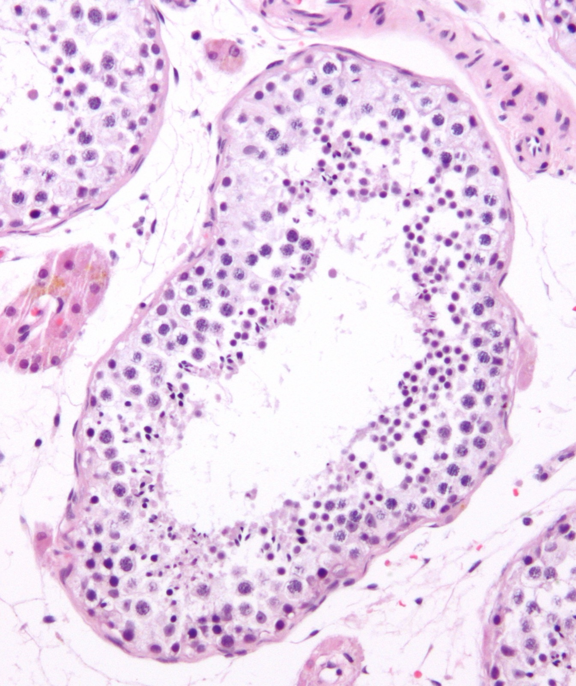
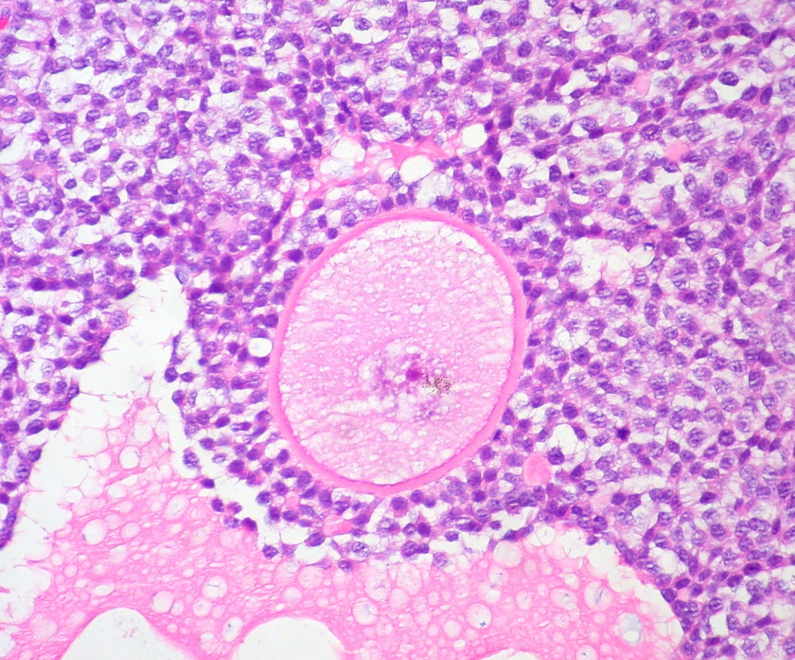
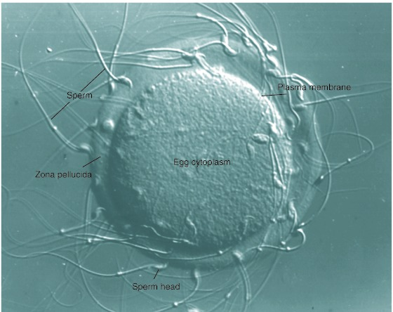

4.7 The Two Systems That Build Gametes
Chapter 4.6 left meiosis happening somewhere called "the gonads" and moved on. This chapter opens that box. Two organ systems run the same process — meiosis — and get startlingly different results from it: one produces four gametes from every cell, hundreds of millions at a time, and the other produces one, about four hundred times in a life. The reason is worth understanding, because it explains almost everything else about how the two systems are built.
How this chapter is written
This chapter covers human reproductive anatomy and physiology. It is written the same way as every other organ system in this course: plainly, using the correct anatomical names, focusing on what each structure does and how the parts work together.
It is a biology chapter, not a health or relationships one. Questions about the latter belong with a teacher, a school nurse or a doctor, and your teacher runs an anonymous question protocol in class for exactly that reason. Nothing here is about anyone's personal life; it is about how an organ system works, in the same way the digestive chapter is about how a gut works.
Your learning target is to compare the structure and function of the two systems. So the organising question throughout is the one this whole course keeps asking: what is each part for, and why is it built the way it is?
The two systems, part by part
Both systems have the same three jobs, and it helps to hold them in mind as a checklist:
- Make gametes, by meiosis, in a gonad — the testis or the ovary.
- Transport them, along a tube, to the place where fertilisation could happen.
- Make hormones, because both gonads are endocrine glands as well as gamete factories. That third job is Chapter 4.8.
Everything else is a variation on how those three are done. Work through both diagrams below, and read what each structure does as you get it right.
Label the reproductive systems
InteractiveThe male system: a production line
The design problem is throughput. Sperm are made continuously from puberty onwards, at a rate of roughly a thousand per second, and the system is laid out as a line: testis → epididymis → vas deferens → urethra, with two glands adding fluid on the way past.
- The testis contains tightly coiled seminiferous tubules — several hundred metres of them packed into each testis — and it is inside those tubules that meiosis happens. Between the tubules sit the cells that make testosterone.
- The epididymis is a coiled tube on the back of the testis where sperm are stored and finish maturing. Sperm leaving the testis cannot yet swim properly; they acquire that here.
- The vas deferens carries them up and over the bladder. It is the tube cut in a vasectomy — which is why a vasectomy stops sperm reaching the semen without affecting testosterone at all.
- The seminal vesicle adds a fluid rich in fructose: fuel for the sperm's tail. The prostate gland adds an alkaline fluid, which matters because sperm have to survive an acidic environment on the way. Most of the volume of semen comes from these two glands, not from the testes.
- The urethra carries both urine and semen, at different times.
One design feature is worth pausing on because it is such a clear case of structure following function. The testes sit outside the body cavity, in the scrotum. That looks like poor design for something so vulnerable — until you know that sperm production fails at core body temperature and needs to be a couple of degrees cooler.
The scrotum is a temperature control system: muscle in its wall pulls the testes closer to the body when it is cold and lets them hang lower when it is warm. That is a feedback loop, and you will meet the formal version of it in Chapter 4.8.
The female system: a chamber, and a route to it
The design problem here is completely different. This system does not need throughput; it needs to release one egg at a time, catch it, and then support an embryo for nine months. Everything about it follows from that second requirement.
- The ovary holds the immature egg cells and releases one mature egg roughly once a month. Like the testis it is also an endocrine gland, producing oestrogen and progesterone.
- The oviduct — also called the fallopian tube — carries the egg towards the uterus, moved by cilia and by muscle in the tube wall. Fertilisation normally happens here, in the upper third of the tube, not in the uterus.
- The uterus is a muscular chamber where an embryo implants and develops. Its wall is mostly smooth muscle, which is what contracts during labour.
- The endometrium is the blood-rich lining of the uterus. It thickens every cycle to receive an embryo and is shed as a period if none arrives. Chapter 4.8 follows exactly what builds it up and what takes it away.
- The cervix is the narrow neck at the base of the uterus, and the vagina is the muscular tube connecting it to the outside.
Notice the gap in the female system, because it is a genuinely odd piece of anatomy: the ovary is not attached to the oviduct. An ovulated egg is released into the body cavity and swept into the funnel-shaped opening of the tube by its fringed end. Almost always this works. Occasionally it does not, and an embryo implants in the tube instead of the uterus — an ectopic pregnancy, which is a medical emergency because the tube cannot accommodate it.
One more piece of anatomy is worth stating correctly, because it is very commonly described wrongly. The hymen is a thin fold of tissue partly surrounding the vaginal opening. Its shape, thickness and elasticity vary a great deal between individuals, it usually has an opening from birth, and in many people it stretches rather than tearing. Its appearance is not evidence about anybody's sexual history, and no medical body treats it as such.
Both systems in three dimensions
The diagrams flatten each system onto a page. Here they are in place in the body, around the bladder, with the organs at their real sizes. Switch between the two systems, turn the model, and click any organ to see what it does.
The two systems, in place
InteractiveFour gametes, or one
Now the process itself. Both systems run meiosis, and meiosis makes four cells — you established that in Chapter 4.5 and counted it stage by stage. So why does one testis produce hundreds of millions of sperm while an ovary produces one egg a month?
Work through both pathways side by side. The interactive draws the cells to scale, which turns out to be the entire answer.
Four gametes or one
Interactive![Two labelled columns side by side, each running down through five rows. The left column, tinted blue, begins with a single spermatogonium, which grows into a primary spermatocyte. That cell divides into two equally sized secondary spermatocytes; each of those divides again, giving four equal spermatids in the fourth row; the bottom row shows four sperm, each with a small head and a long tail. The right column, tinted pink, begins with a single oogonium, which grows into a much larger primary oocyte. That cell divides very unequally into one large secondary oocyte and one tiny first polar body. In the fourth row the secondary oocyte has divided unequally again into a large ootid and a second tiny polar body, and the first polar body has split into two more tiny polar bodies, making four cells in the row. The bottom row shows a single large ovum with the three shrivelled polar bodies beside it.](../images/u4/gametogenesis-labelled.jpeg)


A secondary spermatocyte is haploid. It is produced by meiosis I, and meiosis I is the reduction division — so it has 23 chromosomes.
It is very often labelled diploid by mistake, and the mistake is understandable: a secondary spermatocyte still contains 46 chromatids, because the sisters have not separated yet. But chromatids are not chromosomes. The description "diploid, in prophase of meiosis I" belongs to the primary spermatocyte, one step earlier. Count centromeres, not arms, and the confusion disappears.
![Seven numbered stages in a row showing a round spermatid reshaping into a sperm. In stage one a round cell holds a large pink nucleus beside an amber Golgi apparatus. In stage two a single amber droplet sits against the top of the nucleus and two tiny rods lie at the opposite end. In stage three the droplet has spread into an amber cap over the nucleus, labelled acrosome, and a blue-grey flagellum has begun to grow from the other end. In stage four the cell is oval, the nucleus denser, the tail longer, and teal mitochondria have appeared in the cytoplasm. In stage five the mitochondria are coiled into a tight spiral around the base of the tail, just behind the head. In stage six the spiral is in place and the leftover cytoplasm has pinched off as a separate pale blob, labelled excess cytoplasm shed. Stage seven is the finished sperm, with brackets labelling head, midpiece and tail.](../images/u4/spermiogenesis.jpeg)
Why the two gametes are built so differently
Here is the argument the diagram is making, spelled out. The two gametes have completely different jobs, and each one's design follows from its job.
A sperm has to travel. That is essentially all it has to do. So it is stripped down to the minimum: a haploid nucleus, an acrosome to get through the egg's coat, a midpiece of mitochondria to power the tail, and a tail. It is the smallest cell in the human body. Making four small ones costs almost nothing, and when only one of hundreds of millions will succeed, four is better than one.
An egg has to build. After fertilisation, the zygote divides repeatedly for several days before it implants and can draw anything from the parent's blood supply. Every one of those divisions runs on materials the egg stockpiled in advance: ribosomes, mitochondria, mRNA, food reserves, and all the machinery the early embryo will need before its own genes are properly switched on. The egg is the largest cell in the human body — just visible without a microscope.
Now put those two facts together. If oogenesis divided its cytoplasm evenly, it would produce four cells with a quarter of the stockpile each — and none of them could build an embryo. So it does not divide evenly. It gives one cell almost everything and pushes the other three nuclei out as tiny polar bodies, which soon break down.
The polar bodies are not a mistake, a failure, or waste. They are the price of concentrating the cytoplasm. A cell cannot both split its contents four ways and give one gamete enough to build an embryo with — so oogenesis divides the chromosomes evenly, exactly as meiosis requires, and divides the cytoplasm as unevenly as possible.
| Spermatogenesis | Oogenesis | |
|---|---|---|
| Gametes per meiosis | Four | One, plus three polar bodies |
| Cytoplasm divided | Equally | Very unequally |
| Size of the finished gamete | The smallest cell in the body | The largest cell in the body |
| When it starts | At puberty | Before birth — all the primary oocytes are already made |
| When it stops | Continues throughout adult life | At menopause |
| Rate | Roughly a thousand sperm per second, continuously | About one egg per cycle, around 400 in a lifetime |
| Time for one cell to finish | About 70 days | From before birth until the cycle that ovulates it — years to decades |
Look at the "when it starts" row again, because it explains something from Chapter 4.6. Every primary oocyte a person will ever have was made before they were born, and each one is paused part-way through prophase I — homologues paired up, mid-division — until the cycle that releases it. An egg ovulated at 40 has been holding that arrangement for forty years, and the proteins that hold paired chromosomes together degrade over time. That is why the risk of nondisjunction rises with the age of the person producing the egg.
Spermatogenesis has no equivalent, because it starts fresh from dividing stem cells every time. It has a different age-related issue instead: more rounds of DNA replication mean more opportunities for copying errors.
What happens when they meet
Fertilisation is the fusion of a sperm and an egg to make a diploid zygote, and it happens in the upper part of the oviduct, usually within a day of ovulation.

Two haploid nuclei then fuse, and the chromosome number is restored: 23 + 23 = 46. The loop in Figure 4.1 has closed, and everything from Chapter 4.1 begins again.
![One ovary, oviduct and uterus seen from the front, with the embryo drawn at nine points along its journey. At the far right, day 0, ovulation releases an egg from the ovary into the funnel of the oviduct; just inside, fertilisation, where sperm surround the egg. Travelling leftward along the oviduct: day 1, the one-celled zygote; day 2, two cells; day 3, four cells; day 4, a solid ball of cells, the morula. Day 5, a hollow blastocyst, arriving where the oviduct opens into the uterus. Inside the uterus: day 6 to 7, the blastocyst hatching from its coat, and day 8 to 9, implantation, the blastocyst embedded in the thickened lining. An enlarged circle below shows the blastocyst in detail: a single outer layer of cells around a fluid-filled cavity, with a cluster of purple cells at one side labelled inner cell mass. Every embryo is drawn the same size as the original egg.](../images/u4/embryo-journey.jpeg)
Trace one continuous chain and the whole unit lines up:
meiosis (4.5) → a haploid gamete carrying one of 8,388,608 possible combinations (4.6) → built in an organ system designed for its job (4.7) → fertilisation restores 2n → mitosis and differentiation build a body (4.1, 4.4) → controlled by checkpoints (4.3).
The only thing still missing is what decides when any of it happens — when an egg is released, when sperm production runs, when the lining of the uterus is built up or shed. That is one chapter away.
A note on the numbers
Two figures in the table above are worth turning over, because they make the difference between the systems concrete rather than abstract.
Roughly a thousand sperm per second. That is around 130 million a day, produced continuously, for decades. Each one is the product of a complete meiosis, and each one carries a different combination of the 8,388,608 possible.
About 400 eggs in a lifetime. A person is born with somewhere between one and two million primary oocytes already made and paused. Most of them never mature — they simply degenerate over the years. Roughly one is ovulated per cycle, for about thirty-five years, which comes to a few hundred: less than one in two thousand of the oocytes present at birth.
A brief note on infections
Both systems can be affected by sexually transmitted infections, which are simply infections whose main route of transmission is sexual contact. They are caused by the same three kinds of organism as any other infection — bacteria (chlamydia, gonorrhoea, syphilis), viruses (HIV, HPV, herpes, hepatitis B) and parasites — and, like other infections, the bacterial ones are treatable with antibiotics while the viral ones generally are not.
Two points are worth stating precisely, because they are the ones most often reported wrongly.
- Many carry no symptoms at all, particularly early on. Chlamydia frequently produces none, which is why it can go untreated long enough to damage the oviducts and cause infertility. Testing is not the same as having symptoms, and an infection cannot be ruled out by how someone feels.
- Condoms substantially reduce transmission, but not to zero. The Cochrane systematic review of condom effectiveness (Weller and Davis, Cochrane Database of Systematic Reviews) found that consistent use is associated with roughly an 80% reduction in HIV transmission between partners. That figure is often quoted with the wrong source attached to it — it comes from the Cochrane review of prospective studies, not from a single WHO publication.
Numbers in this area date quickly, so treat any figure you are given as belonging to a particular year and place. As an example: the US Centers for Disease Control and Prevention estimated about 32,000 new HIV infections in the United States in 2022 — roughly half the figure that was being quoted from the early 2010s, following the introduction of treatments that both keep people healthy and prevent onward transmission. If you are given a statistic in this field without a date, that is a reason to check it, not to repeat it.
That asymmetry is the reason the two systems are built so differently at every level — organ, cell and timing. One is a factory optimised for volume, running continuously and replenishing its own stem cells. The other is a fixed, finite stock, spent one at a time, with an enormous investment in each unit and a body prepared to support what it becomes.
Both are running meiosis. Neither is doing it better than the other. They are solving different halves of the same problem.
Check your understanding
Where does fertilisation normally take place?
Fertilisation happens near the ovary end of the oviduct, which is why the embryo arrives in the uterus several days old and already dividing. An embryo that implants in the tube instead is an ectopic pregnancy.
Where do sperm acquire the ability to swim?
Maturation and manufacture happen in different places. The testis runs meiosis and the reshaping that follows it; the epididymis is a storage coil where the finished cell gains the ability to use its tail.
A secondary spermatocyte is:
It is produced by meiosis I, the reduction division, so it is haploid. It still holds 46 chromatids because the sisters have not separated — but chromatids are not chromosomes. Count centromeres.
A primary oocyte, sitting in an ovary before birth, is:
Ploidy is set by the reduction division, not by how much DNA is present. Until meiosis I separates the homologues, the cell holds two full sets — however many chromatids it has copied.
Why does oogenesis produce only one usable gamete?
Both pathways make four haploid nuclei. Oogenesis divides the chromosomes evenly and the cytoplasm very unevenly, because an egg has to carry everything the embryo needs for its first few days.
Why can spermatogenesis afford to share its cytoplasm out equally between all four cells?
Each pathway divides its cytoplasm according to what the finished gamete has to do afterwards. Nothing is asked of a sperm once it has delivered its nucleus, so there is nothing for it to carry.
Why do the testes sit outside the body cavity?
Structure follows function. Sperm production fails at 37 °C, and the scrotum is a temperature control system — its muscle pulls the testes closer to the body when cold and lets them hang lower when warm.
Why does the prostate gland add an alkaline fluid to semen?
Each gland's secretion answers a specific hazard or requirement of the journey ahead. Read the composition of a fluid and you can usually work out which one it is solving.
What is the zona pellucida's role after the first sperm enters?
Without that block, more than one sperm could fuse and the zygote would receive extra sets of chromosomes, which it could not develop with.
What does the acrosome do as a sperm reaches the egg?
Getting in and keeping others out are two separate mechanisms, and they belong to different cells. The sperm brings the enzymes; the egg supplies the block that follows.
Why does the risk of nondisjunction rise with the age of the person producing the egg?
The oocyte has been sitting part-way through prophase I since before the person was born. Spermatogenesis has no equivalent, because it starts fresh from dividing stem cells every time.
Spermatogenesis does not show the same rise in nondisjunction with age. What age-related issue does it have instead?
The two systems age differently because they are built differently. A stock held paused for decades risks losing the proteins that hold chromosomes together; a production line running for decades risks accumulating errors in the copies it keeps making.
- Trace the path of a sperm from where it is made to where it leaves the body, naming every structure it passes through and what each one contributes.
- Trace the path of an egg from where it is made to where an embryo implants. Say where fertilisation would happen, and why the embryo is several days old when it arrives.
- Compare the two systems using the three jobs listed at the start of this chapter — make gametes, transport them, make hormones. For each job, say how the two systems solve it differently and why.
- Both gametes are haploid and both carry 23 chromosomes, yet one is the smallest cell in your body and the other the largest. Explain that in terms of what each one has to do.
- A vasectomy cuts the vas deferens. Predict what happens to sperm production, to testosterone levels, and to the volume of semen. Justify each prediction from the anatomy.
Where this goes next
You now have two organ systems, both fully described, and a process running in each of them. What you do not have is any account of timing.
Something decides when a testis starts producing sperm and keeps it running at a steady rate for decades. Something decides which one of a million paused oocytes matures this month, releases it on roughly the right day, and builds the lining of the uterus to receive it — then either maintains that lining or sheds it, depending on whether an embryo arrived. Something also decided, years earlier, when both systems should start working at all.
None of that is decided by the organs themselves. It is decided by hormones, arranged in loops, and Chapter 4.8 is about how those loops work — and about how you would design an investigation to prove one of them is real.